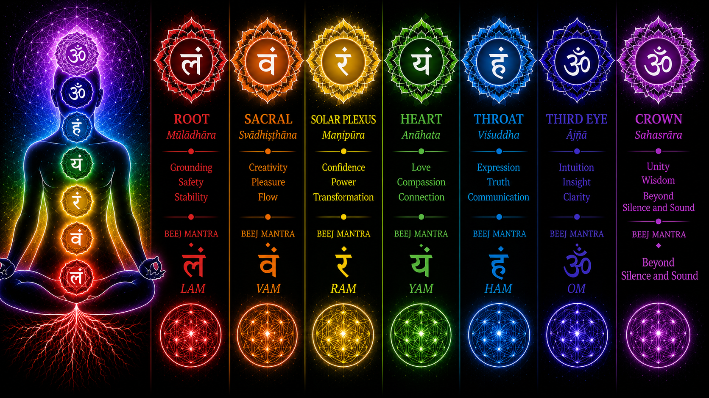

Understanding singing meditation
Discover the profound practice of singing meditation with Temples of Sound. Our unique approach fosters calm and harmony, providing a sanctuary for your mind and body. Explore how this ancient practice can transform your daily life and help you connect with your inner self.
Singing Meditation Sessions
(Harmonic Hang, Wake 'n' Shake, Recess)
Singing meditation is a shared practice of voice, breath, and sustained sound. Rather than focusing on performance, the invitation is to use the voice as a tool for presence, nervous-system regulation, and self-awareness.
Sessions are supported by the steady drone of shruti boxes, along with drums and other instruments that help create a grounded field of sound. Instruments are available to share, and participants are always welcome to bring their own.
As part of the practice, we work through the seven-chakra system, toning with the associated notes across the octave to explore resonance through the body from root to crown.

We gather for weekly sessions, with additional evening sessions several times each month. Private and custom sessions are also available for individuals or small groups and can be shaped around what feels supportive, including options that incorporate intentional touch or massage alongside sound and meditation.
No musical experience is required. You’re invited to tone, hum, sing, listen, or simply rest in the vibration—meeting your own voice where it is and experiencing sound from the inside out.
Sound Immersions
Our sound immersions are our answer to the traditional sound bath. Rather than simply lying back while sounds are played around you, these experiences invite you into the sound itself through sustained tone.
Shruti drones, drums, voice, and other instruments create an immersive field of vibration. You’re welcome to hum, tone, sing, play, listen, move, or simply receive. Instruments are available to share, and you’re also welcome to bring your own.
Sound immersions are offered by request and created on a custom basis for individuals, couples, or small groups. Each session can be shaped around the experience you’re looking for, with options to incorporate intentional touch or massage alongside sound and meditation.
No musical experience is required. There is nothing to perform or perfect—just space to listen, sound, regulate, and experience what unfolds.
Frequently asked questions about singing meditation
What is singing meditation and what can I expect?
Singing meditation involves using instruments that produce sustained tones, known as drones. During a session, you can use your voice or participate silently to create calm and harmony in your body. We guide you through a meditation aligned with the seven-chakra system, corresponding to the octave keys C–B.
Who benefits most from singing meditation?
People who have difficulty with conventional silent meditation often appreciate having breath, vibration, and voice as a focal point. No musical experience is required.
What makes Temples of Sound’s singing meditation unique?
Our offering is both interactive and receptive. We provide shruti boxes to use during sessions, and we take breaks between each chakra for self-care and sharing.
How does singing meditation help with life's challenges?
Sound can offer a consistent point of focus during stress, emotional intensity, or mental noise. The practice invites you back toward breath, body awareness, self-inquiry, and connection.